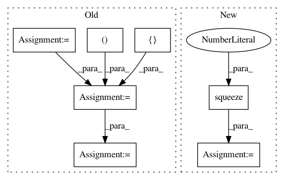

2b3db4e19e16e0723130e5dee5d4b668e11a514d,luminoth/models/fasterrcnn/roi_pool_test.py,ROIPoolingTest,testBasic,#ROIPoolingTest#,38
Before Change
[3, 6, 6, 9, 9], // Inside matD
])
// Construct the pretrained map with four matrix.
matA = np.ones((5, 5))
matB = np.ones((5, 5)) + 1
matC = np.ones((5, 5)) + 2
matD = np.ones((5, 5)) + 3
pretrained = np.bmat([[matA, matB], [matC, matD]])
// Expand the dimensions to be compatible with ROIPoolingLayer.
pretrained = np.expand_dims(pretrained, axis=0)
pretrained = np.expand_dims(pretrained, axis=3)
results = self._run_roi_pooling(roi_proposals, pretrained, self.config)
print(results["crops"].shape)
print(results["roi_pool"][0])
After Change
(4, 2, 2, 1)
)
results["roi_pool"] = np.squeeze(results["roi_pool"], axis=3)
// Check that max polling returns only "multiplier_a"
self.assertAllEqual(
results["roi_pool"][0],
np.ones((2, 2)) * self.multiplier_a
In pattern: SUPERPATTERN
Frequency: 3
Non-data size: 7
Instances
Project Name: tryolabs/luminoth
Commit Name: 2b3db4e19e16e0723130e5dee5d4b668e11a514d
Time: 2017-08-16
Author: gaston@tryolabs.com
File Name: luminoth/models/fasterrcnn/roi_pool_test.py
Class Name: ROIPoolingTest
Method Name: testBasic
Project Name: THUNLP-MT/THUMT
Commit Name: 91db14020567987d8cda29a6140825c888e84917
Time: 2017-11-24
Author: playinf@stu.xmu.edu.cn
File Name: thumt/data/record.py
Class Name:
Method Name: get_input_features
Project Name: OpenNMT/OpenNMT-py
Commit Name: 26421ce20c6b626ceacafbb3282cad1d5dce04ca
Time: 2017-07-30
Author: bpeters@coli.uni-saarland.de
File Name: onmt/Models.py
Class Name: Embeddings
Method Name: forward